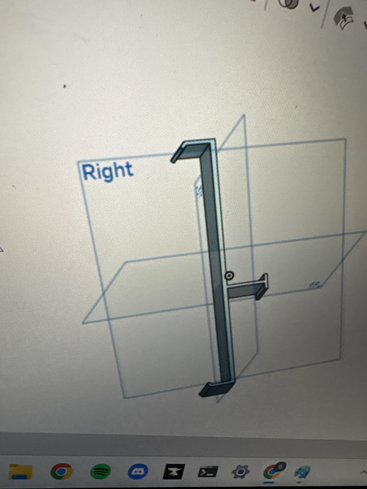

1. The Open-Source Ecosystem
Before fabricating the prosthesis, I explored the open-source assistive technology ecosystem, including the e-NABLE Hub, the NIH 3D Print Exchange, and Makers Making Change.
Documentation Evaluation
[We will fill this in with your critique of the Phoenix Hand docs based on Findability, Completeness, Clarity, Visuals, Troubleshooting, and Accessibility.]
2. Fabrication & Assembly
We utilized Prusa Mini+ printers to fabricate the e-NABLE Phoenix Hand V2 parts in PLA at a 150% scale. Because of the size increase, the print jobs had to be carefully divided across multiple machines over several days.


Functional Analysis
The Phoenix Hand V2 relies on a wrist-driven mechanism. When the user flexes their wrist downward, the tensioning cables (the white strings routed from the tensioner box down to the fingertips) are pulled taut. Because these strings are routed over the joints, this tension forces the fingers to curl inward simultaneously, creating a grasping motion.
- Grip Actuation: The grip is strictly binary—all fingers close together to form a fist. There is no individual finger articulation.
- Reset Mechanism: When the wrist returns to a neutral position, the cable tension is released. Elastic cords routed through the back of the fingers snap the hand back to an open position.
- Limitations: The overall grip strength is directly proportional to the user's wrist strength. Additionally, the smooth, hard PLA surface has a low coefficient of friction, meaning smooth objects can easily slip unless the hand is modified with grip tape or a task-specific attachment (addressed in Part 4).
3. Documentation Redesign & Usability Testing
Based on our assembly experience, we identified the most challenging steps and rewrote the documentation to improve clarity for future builders.
[We will insert your improved docs with annotated photos here, followed by the peer usability test reflection.]
4. Task-Specific Modification: Smartphone Mount
To extend the functionality of the right-handed Phoenix Hand, I designed a custom modification targeting a highly relevant daily task: holding a smartphone. The goal was to securely mount the phone to the prosthesis, freeing up the user's fully intact left hand to type, swipe, and effortlessly interact with the touch screen.
Functional Requirements & Mechanics
The design required a non-permanent, lightweight attachment mechanism that could support the dimensions of a standard smartphone without permanently altering the hand or obstructing its tension lines. I designed a custom bracket that snaps directly onto the bottom knuckles of the ring and middle fingers. By utilizing a friction/snap-fit tolerance, the user can easily clip the mount on when viewing their phone, and quickly remove it when standard gripping functionality is needed.
Systematic Inventive Thinking (SIT)
This design utilizes the Task Unification SIT pattern. In traditional use, a person might need a separate pop-socket, a desk stand, or their other hand to stabilize their device. By applying Task Unification, we assigned the new task of "phone stabilization" directly to the existing structural knuckles of the prosthesis. The prosthetic hand itself seamlessly takes on the job of the accessory.

Physical Prototype
The 3D-printed snap-fit smartphone bracket.

OnShape CAD
Digital model of the task-specific modification.


5. Reflection & Community Contribution
Ethical Reflection
[We will write your ethical reflection here, applying the Microsoft Inclusive Design Toolkit principles.]
Community Contribution
[We will describe and link the artifact you are giving back to the community here.]
Bridge to the Capstone
[We will write your thoughts on what user need or design challenge you want to explore in the final capstone project.]